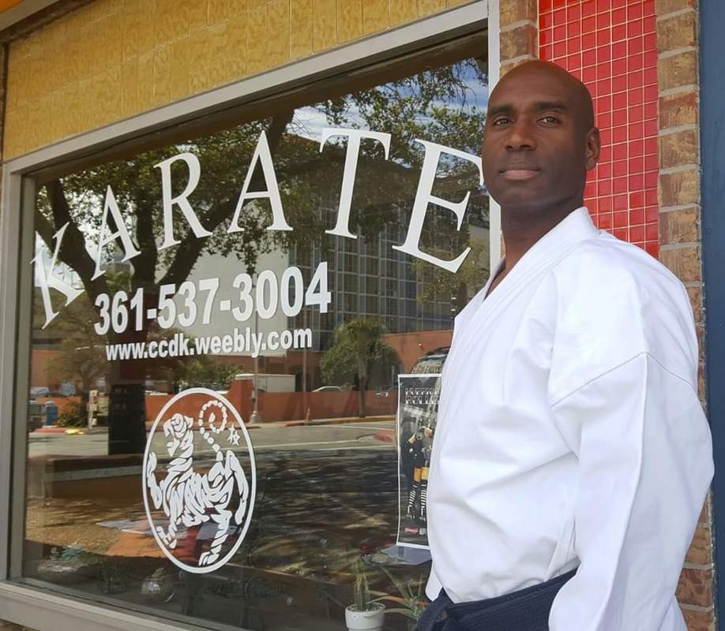
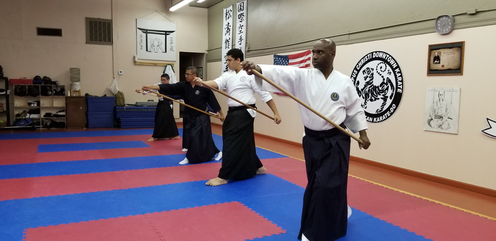
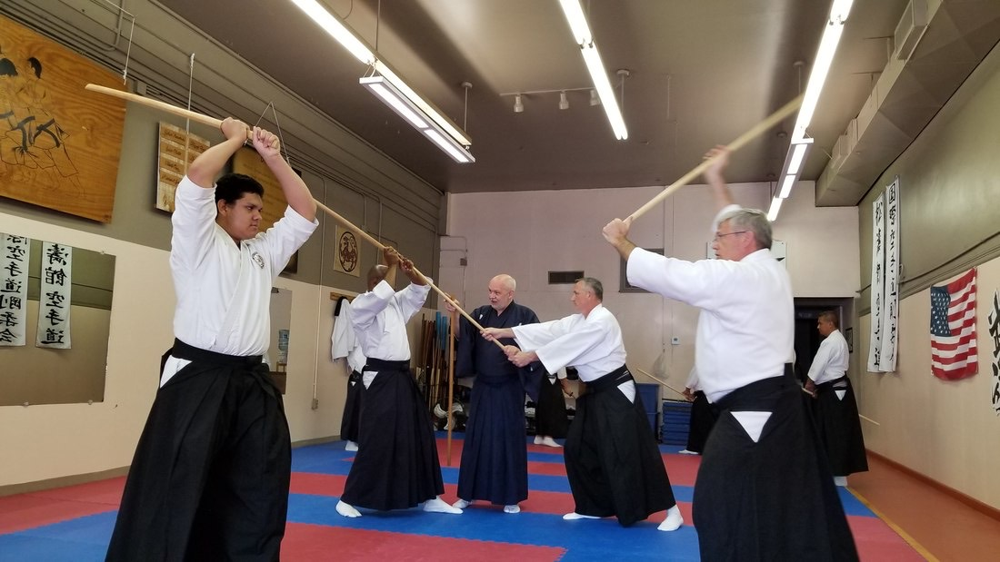
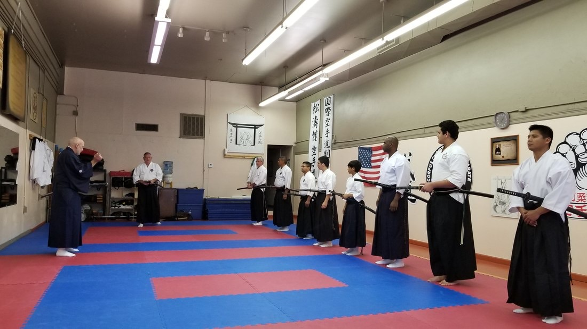
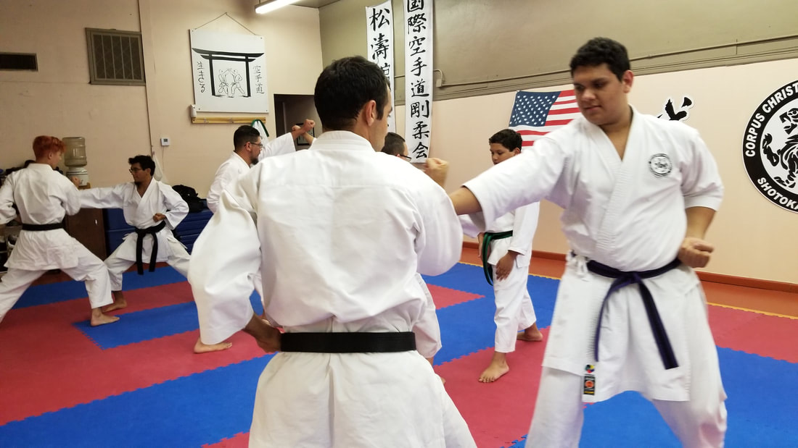
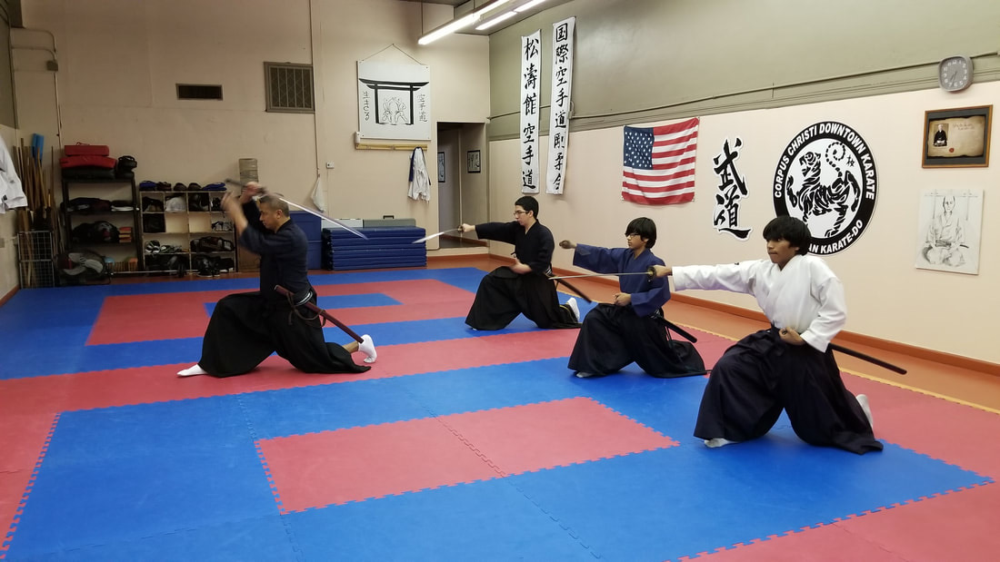
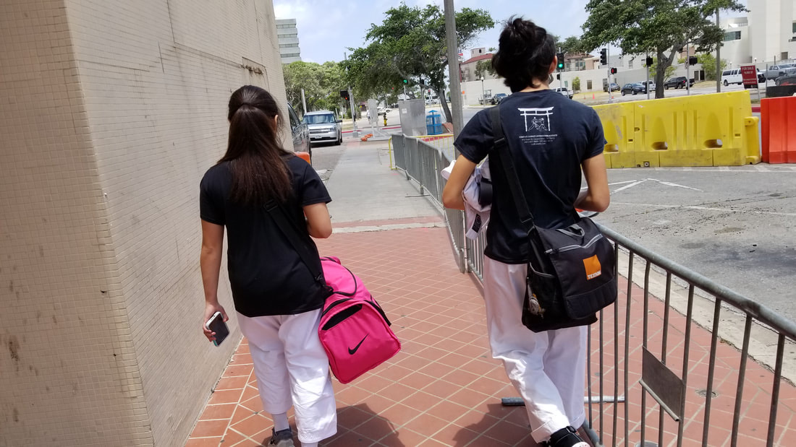

Kihon
Basics
Deep, long stances that give stability, enable powerful movement and strengthen the legs.
Traditional karate · Downtown Corpus Christi, TX
Shotokan Karate-Do, Goju Ryu, Japanese sword and classical weapons, taught by Shihan Jeff R. Ghee, 7th Dan, in a dojo on N Chaparral Street.

703 N Chaparral StAcross from the Greyhound station, next door to Axis Tattoo
Mon–Thu 5:30–8:30 pmFriday 5:30–7:00 pm
Kids & adultsBeginner classes and private lessons
We teach and study traditional karate
A progressive karate school that evolves through modern training methods and techniques, while keeping a strong sense of tradition. Major style: Shotokan Karate-Do. Minor style: Goju Ryu Karate-Do.
Beginners and colored belts build strong stances and powerful technique. As students progress to brown and black belt, the style becomes more fluid, with grappling and aikido-like techniques found in the black belt kata.
Basics
Deep, long stances that give stability, enable powerful movement and strengthen the legs.
Forms
Set patterns of moves practiced with attention to every detail: posture, breathing, footwork and correct form.
Sparring
Techniques that mirror the stances of kihon and kata, then grow more flexible with greater movement.
Classes
Improve overall fitness, learn practical self-defense and train with classical weapons.
Mon & Wed · 6:00–7:00 pm
Courtesy, focus and strong basics. The focus built in class carries over into schoolwork.
Tue & Thu · 7:00–8:00 pm
Traditional Shotokan for fitness and self-defense, from first-day beginners to experienced karate-ka.
Mon & Wed · 7:30–8:30 pm
Classical Japanese sword training in hakama, alongside the karate program.
Friday · 6:00–7:30 pm
The dojo's minor style, plus traditional weapons such as the bo.
One-on-one instruction at your pace. Call to arrange a time.

Chief Instructor
7th Dan Shotokan Karate-Do and 6th Dan Goju Ryu. He started karate in Columbus, Ohio, earned his 2nd Dan in Japan while serving in the U.S. Navy, and has called Corpus Christi home since 1990.
Inside the dojo





Our mission
Personal growth of mind, body and spirit.
Questions
Anyone. Karate can be practiced alone or in groups, by young and old, men and women alike. There is a Kids Beginner Karate class, an Adult Karate class and private classes.
The major style is Shotokan Karate-Do and the minor style is Goju Ryu Karate-Do. There is also a Japanese sword class (Iaijutsu) and classical weapons training.
Yes, private classes are available. Call 361-537-3004 to arrange one.
703 N Chaparral St, Corpus Christi, TX 78401, across the street from the Greyhound bus station and next door to Axis Tattoo.
There are various instruction and price plans. Call 361-537-3004 or stop by during class hours to find the one that fits you.
Visit the dojo
| Monday | 5:30–8:30 pm |
| Tuesday | 5:30–8:30 pm |
| Wednesday | 5:30–8:30 pm |
| Thursday | 5:30–8:30 pm |
| Friday | 5:30–7:00 pm |
| Saturday | Closed |
| Sunday | Closed |